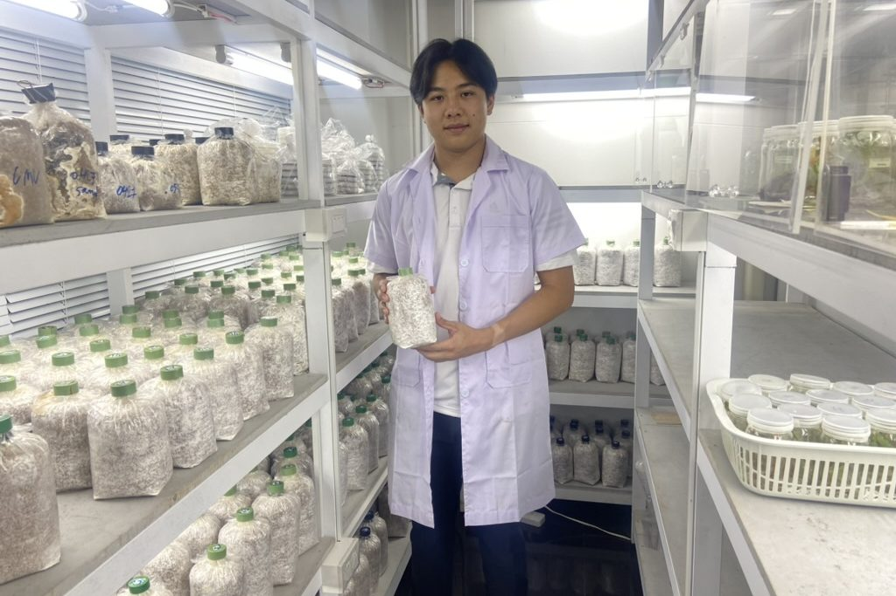
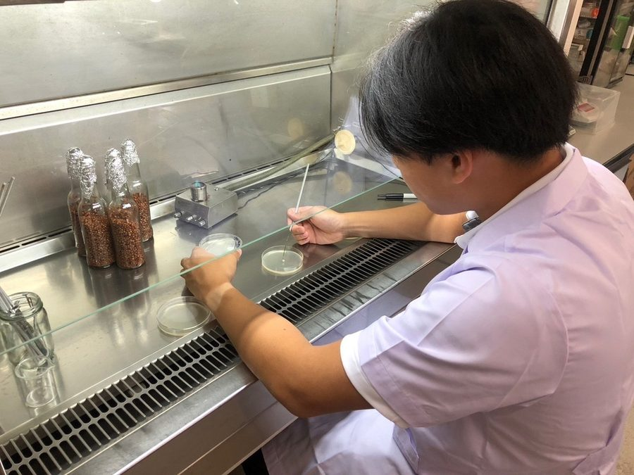
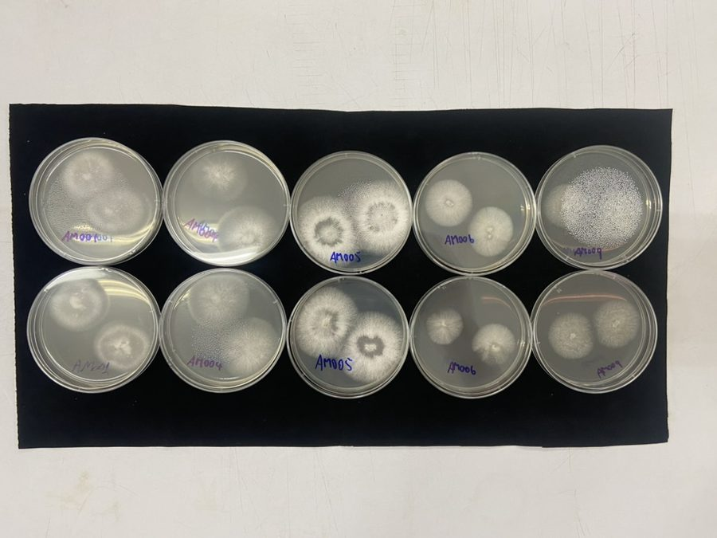
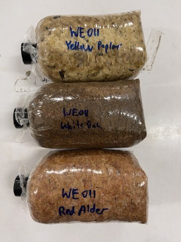
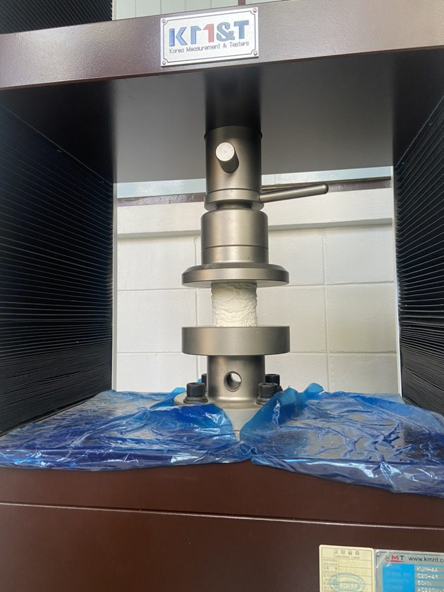
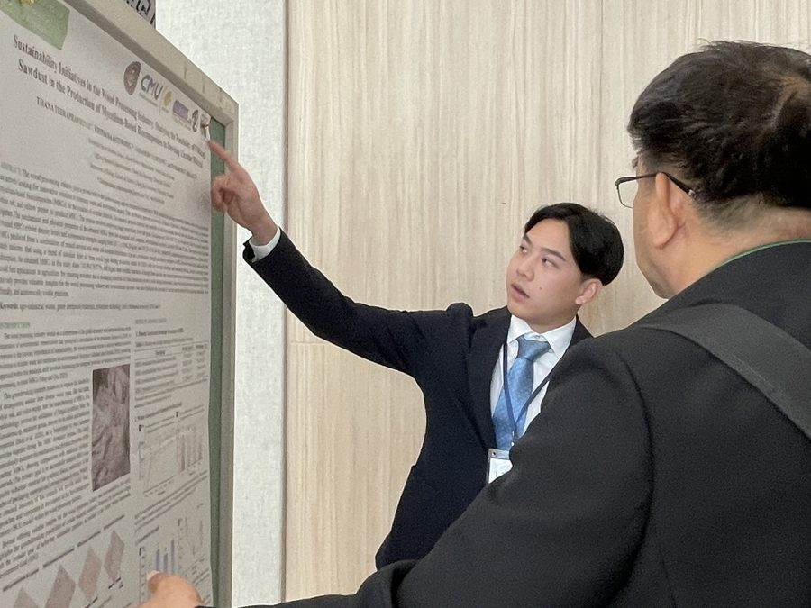

Mycelium biocomposites
Packaging grown from fungi and farm waste, as a replacement for polystyrene foam.

The problem
Expanded polystyrene foam protects products in shipping, but it is made from petroleum and does not break down. Fungal mycelium can bind loose agricultural waste into a light, solid material that does a similar job and composts after use.
What I did
I worked with Dr. Worawoot Aiduang, Prof. Saisamorn Lumyong and a team of five postdoctoral researchers across the whole process: culturing fungal strains, preparing substrates, running growth cycles and testing the finished composites.
I screened fungal species against agro-industrial waste substrates such as sawdust and paper waste, and linked each formulation to its compressive and flexural strength.




Results
The work produced five journal articles and one conference paper, two of them as first author. My first-author paper in Polymers (a Q1 journal) showed that paper waste improves the composites' physical and mechanical properties, and has been cited 65 times. The sawdust study won Excellent Paper and Excellent Poster at the 15th International Conference on Environmental and Rural Development.


MycoTech Packaging
I took the material further as MycoTech Packaging, my Conrad Challenge venture: protective packaging grown from mycelium on corn husk and paper waste. It was a Conrad Challenge Innovation Summit finalist and won a Gold Medal and the Best Young Inventor Award at ICAN 2024.